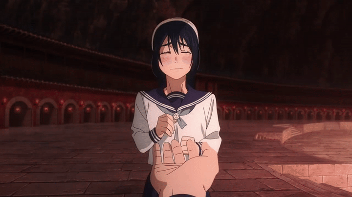
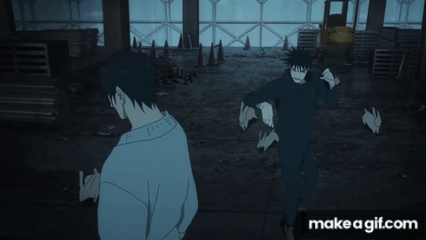

Lista de Derrotas
| Personaje | Cuándo lo derrotó | Resultado | Imagen |
|---|---|---|---|
| Satoru Gojo (joven) | Arco Inventario Oculto (Pasado de Gojo) | Lo dejó fuera de combate (casi muerto) |  |
| Suguru Geto (joven) | Arco Inventario Oculto (después de Gojo) | Derrotado completamente |  |
| Riko Amanai | Arco Inventario Oculto (misión de escolta) | Asesinada |  |
| Dagon | Arco Incidente de Shibuya | Eliminado (muerto) |  |
| Megumi Fushiguro | Arco Incidente de Shibuya | Derrotado (casi lo mata) |  |